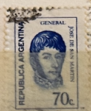
| SOURCE | TITLE| IMAGE MATCH | click to source page |
| Colnect | Stamp: José Francisco de San Martín (1778-1850) (Argentina(Generals - Phosphor) Mi:AR 1152,Sn:AR 936,Yt:AR 949,Sg:AR 1314,Gz :AR 1146,Göt:AR 1533 📮 | 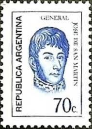 |
| Todocolección | republica argentina. 50 centavos 1921 - Buy Antique stamps of Argentina on todocoleccion | 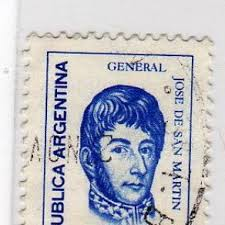 |
| Colnect | Stamp: General Manuel Belgrano (1770-1820) (Argentina(Generals - Fluo) Mi:AR 1065,Sn:AR 926,Yt:AR 866,Sg:AR 1303,Gz :AR 1064,Göt:AR 1524 📮 | 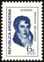 |
| eBay UK | 1971 25c JOSE DE SAN MARTIN ARGENTINA STAMPS X2 | eBay UK | 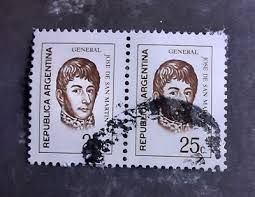 |
| Colnect | Stamp: José Francisco de San Martín (1778-1850) - Offset (Argentina(Generals - Phosphor) Mi:AR 1267I,Sn:AR 1091,Yt:AR 1039,Sg:AR 1329b,Gz :AR 1244A,Göt:AR 1746 📮 | 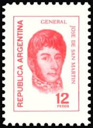 |
| Mercado Libre | Argentina San Martin 949 Gj 1533 Mint+usa A 1970 Envio,lee+ | MercadoLibre | 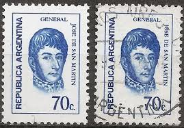 |
| Alamy | ARGENTINA - CIRCA 1973: a stamp printed in the Argentina shows Virgin and Child, Window, La Plata Cathedral, Christmas, circa 1973 Stock Photo - Alamy | 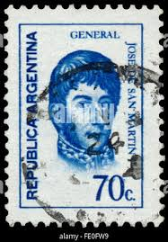 |
| Bob Shop | Argentina - 1971 ARGENTINA GENERAL was listed for 1.00 on 4 Jul at 06:37 by TROTSKIE in Cape Town (ID:647601335) | 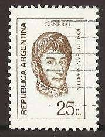 |
| eBay | ARGENTINA 1039 - Jose de San Martin "1974 Dark Blue" (pf22042) | eBay | 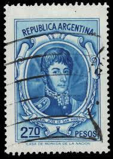 |
| vividagallery.com | Argentina Jose San Martin 120 Pesos Red Orange Republic Symbolism Portrait Postage Stamp Greeting Card by Vivida Gallery | 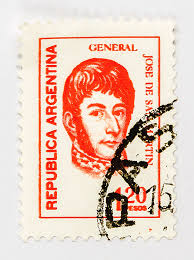 |
| Mercado Libre | Argentina 991 Gj 1632 Mint + Usado San Martín Año 1974-6 | MercadoLibre | 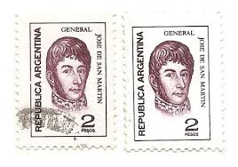 |
| Dreamstime.com | ARGENTINA - CIRCA 1971: a Stamp Printed in Argentina Shows General Jose De San Martin, Circa 1971. Editorial Image - Image of pesos, envelope: 238363170 | 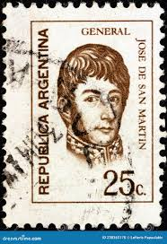 |
| Alamy | ARGENTINA - CIRCA 1975: a stamp printed in the Argentina shows Dream by Emilio Centurion, Painting, circa 1975 Stock Photo - Alamy | 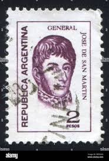 |
| Dreamstime.com | San Martin Stamp editorial photography. Image of independence - 376316372 |  |
| Bob Shop | Argentina - Argentina 1973 General San Martin 25c used was listed for 3.50 on 28 Jun at 14:31 by Jessies in Newcastle (ID:646597943) | 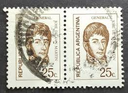 |
| Alamy | ARGENTINA - CIRCA 1975: stamp printed by Argentina, shows General Jose de San Martin, circa 1975 Stock Photo - Alamy | 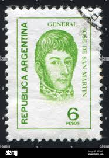 |
| Todocolección | sello usado argentina general jose de san marti - Acquista Francobolli antichi di Argentina su todocoleccion | 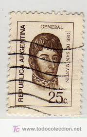 |
| Dreamstime.com | Postage Stamp Printed in Argentina Shows Jose Francisco De San Martin (1778-1850), Generals Serie, 25 C - Argentine Centavo, Circa Editorial Photo - Image of people, collection: 171330851 |  |
| Dreamstime.com | 337 Jose De San Martin Stock Photos - Free & Royalty-Free Stock Photos from Dreamstime | 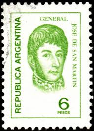 |
| Shutterstock | 6+ Thousand 1960 Stamp Royalty-Free Images, Stock Photos & Pictures | Shutterstock | 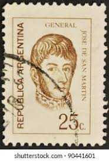 |
| Dreamstime.com | 161 Argentina Military Uniform Stock Photos - Free & Royalty-Free Stock Photos from Dreamstime | 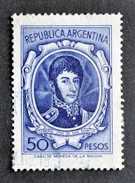 |
| Stamp Collecting Blog | Argentinian definitive stamp series of 1954/76 pt2: Jose de San Martin | 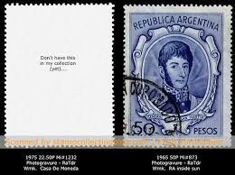 |
| Dreamstime.com | Jose De San Martin 1778 - 1850, the Liberator of Argentina, Chile and Peru, Leader for Independence from Spanish Empire Editorial Stock Photo - Image of mail, argentinian: 227300393 | 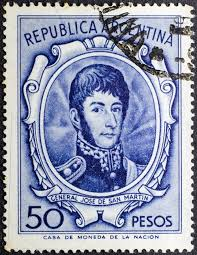 |
| Dreamstime.com | Portrait of Jose Burgos 1837-1872 Priest and Philosopher, Personalities Serie, Circa 1955 Editorial Photography - Image of closeup, estampilla: 102027062 | 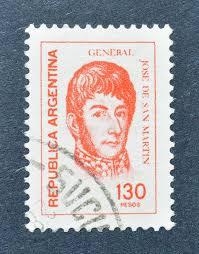 |
| Argentina 500 pesos 1977 uncirculated banknotes for sale | 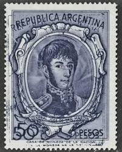 | |
| Dreamstime.com | Stamp of 1850 and Modern Stamps Editorial Photography - Image of ancient, historic: 241335392 | 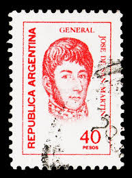 |
| sellosmundo.com | General JOSE DE SAN MARTIN. Argentina America ref. 1670 | 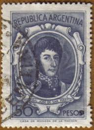 |
| Dreamstime.com | General Jose de San Martin editorial image. Image of ancient - 85422780 | 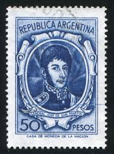 |
| HipStamp | Argentina 1039 Gen. Jose de San Martin 1974 | Central & South America - Argentina, General Issue Stamp / HipStamp | 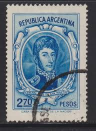 |
| Todocolección | sello usado argentina general jose de san marti - Buy Antique stamps of Argentina on todocoleccion | 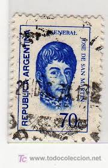 |
| Todocolección | o) 1899 argentina, pair,imperforated, allegory - Buy Antique stamps of Argentina on todocoleccion | 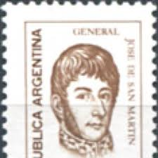 |
| Dreamstime.com | Postage stamp editorial image. Image of letter, cutting - 67586190 | 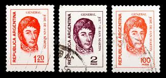 |
| eBay | Argentina Stamp 826 - General Jose de San Martin | eBay | 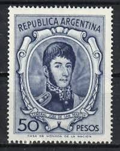 |
| vividagallery.com | Argentina Jose San Martin Portrait 25 Centavos Brown Monochrome Engraved Definitive Postage Stamp Shower Curtain by Vivida Gallery - Vivida Gallery |  |
| Shutterstock | 7+ Thousand Argentine Circa Stamp Royalty-Free Images, Stock Photos & Pictures | Shutterstock | 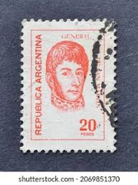 |
| vividagallery.com | Argentina Jose San Martin Portrait 25 Centavos Brown Monochrome Engraved Definitive Postage Stamp Ornament by Vivida Gallery - Vivida Gallery | 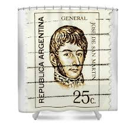 |
| vividagallery.com | Argentina Jose San Martin 120 Pesos Red Orange Republic Symbolism Portrait Postage Stamp Portable Battery Charger by Vivida Gallery - Vivida Gallery | 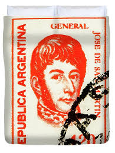 |
| Shutterstock | 107+ Thousand José De San Martin Argentina Royalty-Free Images, Stock Photos & Pictures | Shutterstock | 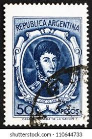 |
| Todocolección | sello usado argentina general jose de san marti - Buy Antique stamps of Argentina on todocoleccion | 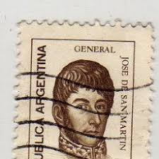 |
| Todocolección | argentina yvert 550 - Buy Antique stamps of Argentina on todocoleccion | 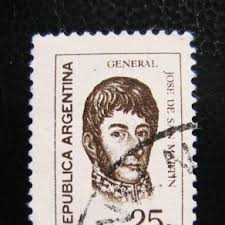 |
| vividagallery.com | Argentina Jose San Martin 2 Pesos Brown National Icon Engraved Casa Moneda Postage Stamp Fleece Blanket by Vivida Photo - Vivida Photo | 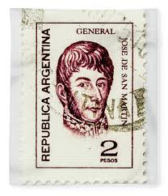 |
| Alamy | ARGENTINA - CIRCA 1970: stamp printed by Argentina, shows Manuel Belgrano, economist, lawyer, politician, and military leader, circa 1970 Stock Photo - Alamy | 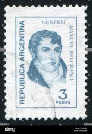 |
| Todocolección | sellos de argentina, gral josé san martín, 5 y - Buy Antique stamps of Argentina on todocoleccion | 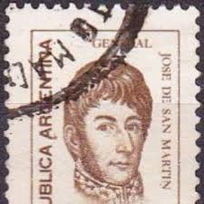 |
| vividagallery.com | Argentina Jose San Martin Portrait 25 Centavos Brown Monochrome Engraved Definitive Postage Stamp Bath Towel by Vivida Photo - Vivida Photo | 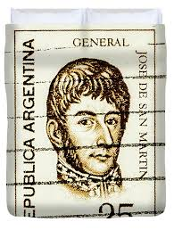 |
| vividagallery.com | Argentina Jose San Martin 30 Pesos Orange National Liberator Engraved Definitive Postage Stamp Long Sleeve T-Shirt by Vivida Gallery - Vivida Gallery | 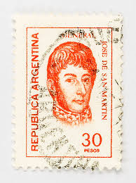 |
| sellosmundo.com | Manuel Belgrano 1770 - 1820. Economist, journalist, politician, lawyer and military man.. Argentina America ref. 178534 |  |
| Dreamstime.com | General Jose de San Martin foto editorial. Imagen de cara - 103439866 | 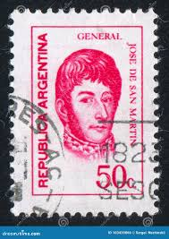 |
| Todocolección | argentina 503/09 1950 centenario de la muerte j - Buy Stamps from other European countries on todocoleccion | 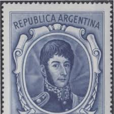 |
| Todocolección | 1971 argentina. general josé francisco de san m - Buy Antique stamps of Argentina on todocoleccion | 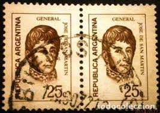 |
| Todocolección | sello tierra del fuego, riqueza austral de 5 c. - Buy Antique stamps of Argentina on todocoleccion | 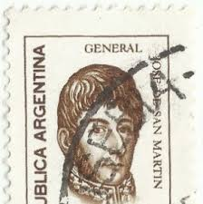 |
| Todocolección | s-00541- republica argentina. coleccione sellos - Buy Antique stamps of Argentina on todocoleccion | 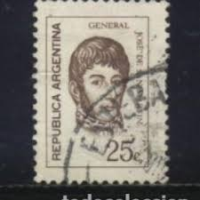 |
| vividagallery.com | Argentina Jose San Martin 30 Pesos Orange National Liberator Engraved Definitive Postage Stamp Youth T-Shirt by Vivida Photo - Vivida Photo | 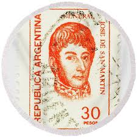 |
| Todocolección | hoja bloque 12 sellos de argentina de pioneros - Buy Antique stamps of Argentina on todocoleccion | 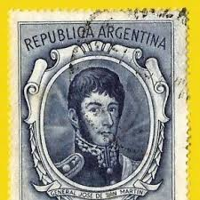 |
| Todocolección | argentina 50 pesos jose de san martín año 1950. - Buy Antique stamps of Argentina on todocoleccion | |
| Alamy | 1970 argentina hi-res stock photography and images - Alamy | |
| Todocolección | argentina - 50 pesos - general jose de san mart - Buy Antique stamps of Argentina on todocoleccion | |
| HipStamp | Argentina #1039 2.70p Gen Jose de San Martin | Central & South America - Argentina, General Issue Stamp / HipStamp | |
| Todocolección | sellos argentina 1980. usado. san carlos de bar - Buy Antique stamps of Argentina on todocoleccion | |
| Todocolección | sello postal argentina 1956 , 50 centavos , nue - Buy Antique stamps of Argentina on todocoleccion |